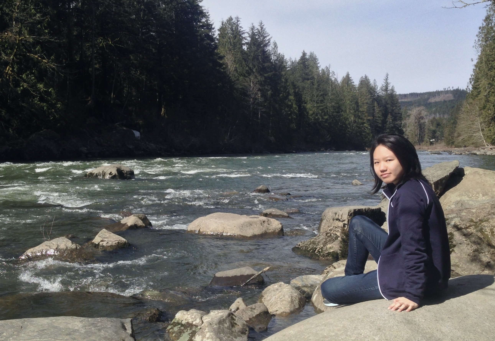
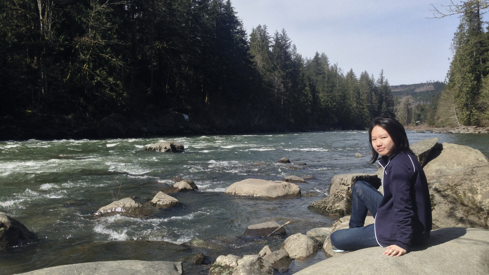

Hi, I’m Jo.
Raised in Taiwan and Orange County, I strive to craft intuitive and meaningful interfaces that make the effort invisible. With a background in philosophy, graphic design, and computer science, I approach design challenges with inquiry, creativity, and logic.
I bring empathy and problem-solving into every stage of the process, asking questions like “Why?” and “What if?” to uncover better ways of connecting people with technology. My work lives at the intersection of culture, history, and innovation, drawing on diverse sources and perspectives to imagine what comes next and what experience delights users.
From anticipating the rise of tablets, wireless earphones, electric motorbikes, and smart wearables like the Apple Watch, to observing how everyday objects like wallets, hats, cars, and water bottles could be redesigned for greater usability, I am fascinated by how humans interact with tools and environments in their daily lives. I seek products like Breadband and PrimeSense and people like Rick Steves and Derek Sivers.
Spanning industries across healthcare, education, and gaming, I aim to balance form and function, designing with storytelling and purpose in mind and creating experiences that transcend time, background, and region.
In my free time, I enjoy exploring and cataloguing content on Goodreads, Letterboxd, Soundcloud, and Medium.
Interest: Katharine Hamnett fashion, Onyx motorbikes, Fishing lines worldwide, Jinjo boy crew, Peter Harrington, Berry Bros and Rudd, School of Rock, Lou Reed, Bruce Lee, Andrei Tarkovsky, Because I could not stop for death
May passion and curiosity forever be the guide.
"To be truly simple, you have to go really deep" - Jony Ive
Hey there!
I do UI/UX Design and 3D Modeling. Preferably for Virtual, Augmented or Mixed Reality. Love digging for unique solutions.


Skills
Photoshop : InDesign : Illustrator : Adobe XD : Sketch
Unity 3D : Cinema 4D : Google Blocks : Tilt Brush
CSS + HTML : Zeplin : Flinto : Webflow
After Effects : Premiere Pro
Javascript : Processing : Wordpress
C# : Java
Languages
German (mother tongue)
English
Spanish : French
Credits to Fabi and Fabi / Tightype for this awesome font Moderat.